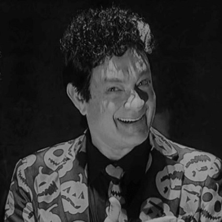

Does the prospect of Mayor David S. Pumpkins getting re-elected scare you?
Well, they should, because his failures have been nothing short of frightening! During his ghastly first term in office, David has:
- Failed to pay his pumpkin taxes in 4 years, despite having campaigned on everybody in Pumpkinville paying their fair share
- Allowed the criminals that he promised to scare out of town to run even more rampantly than before he took office
- Allowed professional developers to ruin the asthetic of our town by drastically reducing the size of our tombs in favor of building more Big-Boo retail stores that we already have a surplus of
In short, David S. Pumpkins getting re-elected as Mayor of Pumpkinville would be an absolute nightmare! Any questions?!

Meet Hal O'Ween, a spooktacular choice for Pumpkinville Mayor!
As your next Mayor, Hal O'Ween will:
- Slash pumpkin taxes for all Pumpkinville residents, regardless of their income class
- Bury crime six-feet under in the Pumpkinville Town cemetary
- Scare those out-of-town developers out of here, so we can go back to making Pumpkinville the spookiest haunt on this side of Death Canyon